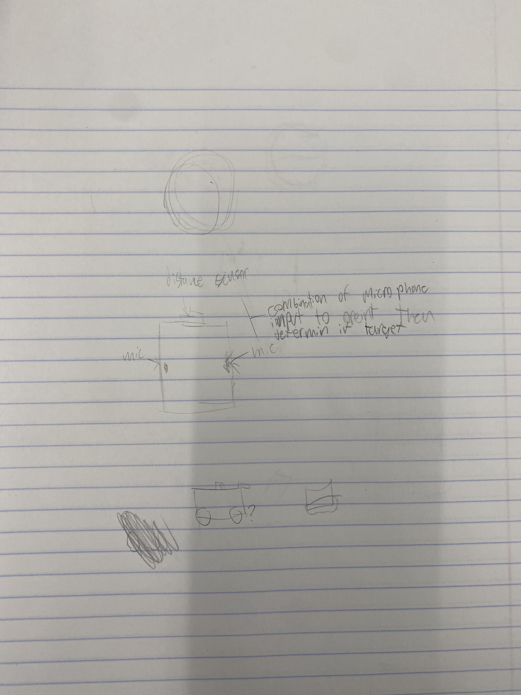
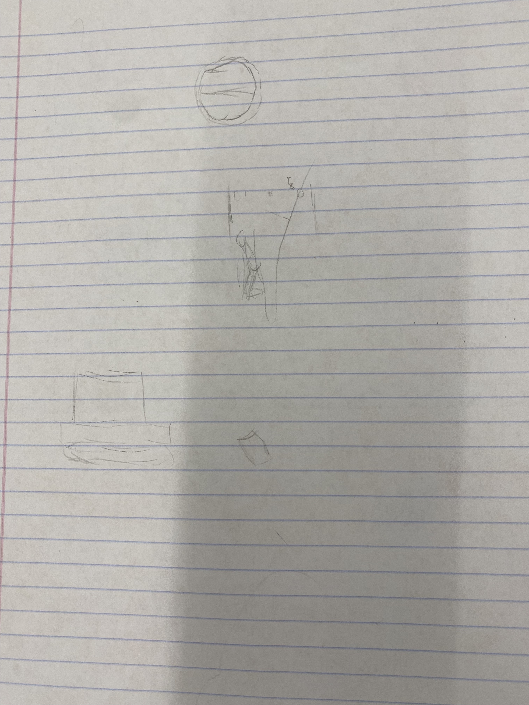
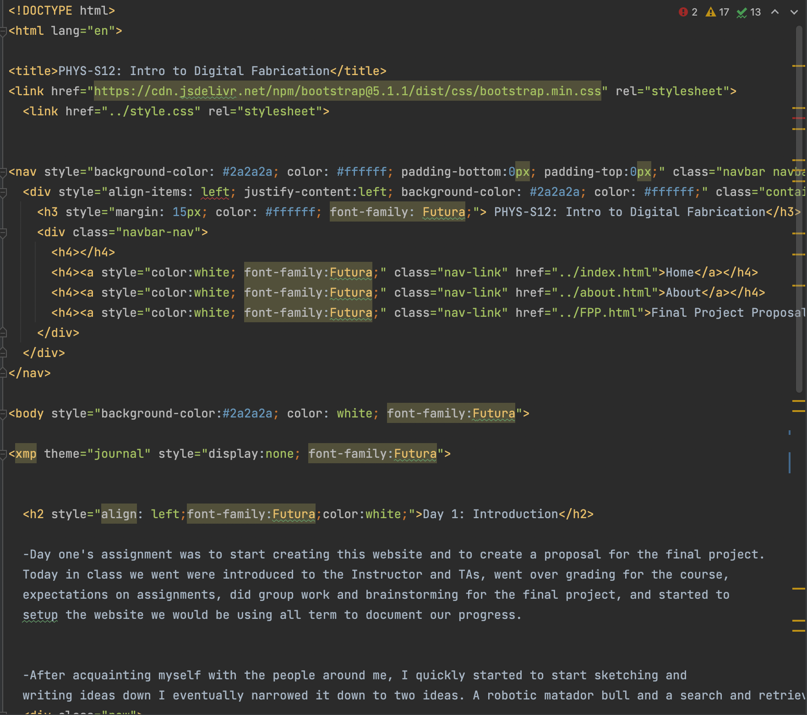
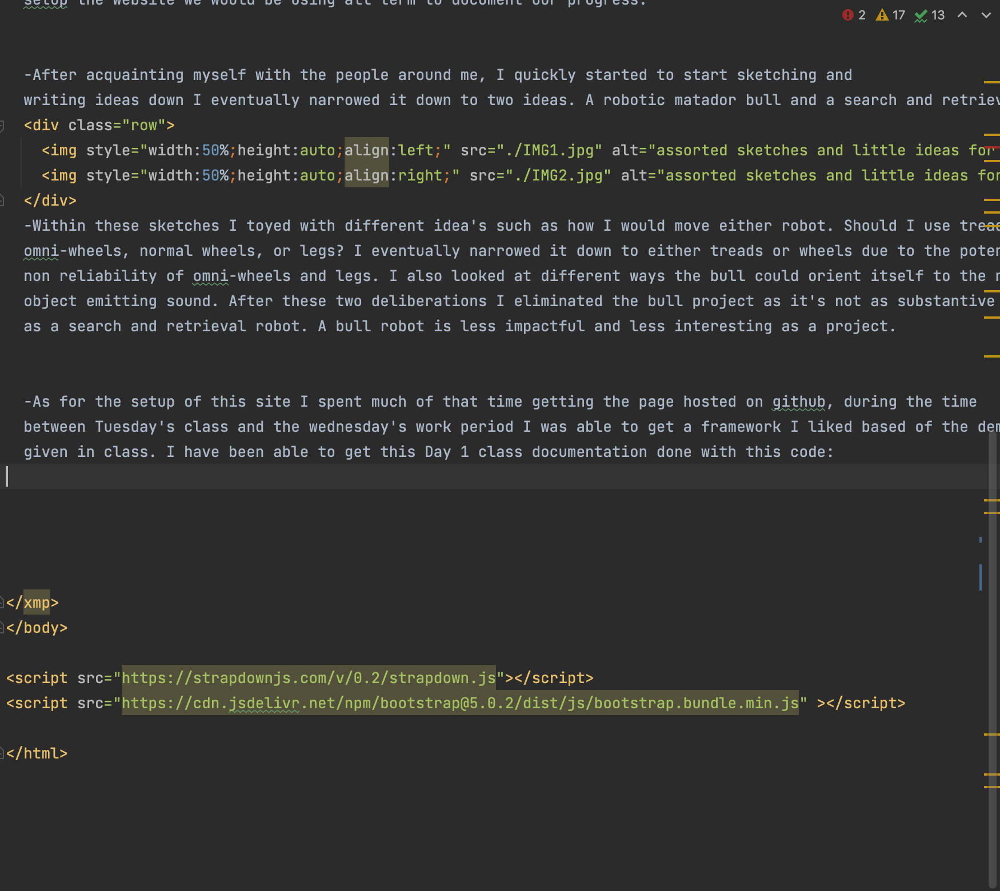

<h2 style="align: left;font-family:Futura;color:white;">Day 1: Introduction</h2>
-Day one's assignment was to start creating this website and to create a proposal for the final project.
Today in class we went were introduced to the Instructor and TAs, went over grading for the course,
expectations on assignments, did group work and brainstorming for the final project, and started to
setup the website we would be using all term to document our progress.
-After acquainting myself with the people around me, I quickly started to start sketching and
writing ideas down I eventually narrowed it down to two ideas. A robotic matador bull and a search and retrieval robot.
<div class="row">


</div>
-Within these sketches I toyed with different idea's such as how I would move either robot. Should I use treads,
omni-wheels, normal wheels, or legs? I eventually narrowed it down to either treads or wheels due to the potential
non reliability of omni-wheels and legs. I also looked at different ways the bull could orient itself to the nearest
object emitting sound. After these two deliberations I eliminated the bull project as it's not as substantive
as a search and retrieval robot. A bull robot is less impactful and less interesting as a project.
-As for the setup of this site I spent much of that time getting the page hosted on github, during the time
between Tuesday's class and the wednesday's work period I was able to get a framework I liked based of the demo we were
given in class. I have been able to get this Day 1 class documentation done with this code:
<div class="row">


</div>
-This code when rendered by a browser looks like the website you've viewed before the pictures directly above.
-Overall the first class and workday pair have been very productive, finishing the about page, finishing the proposal for
my final project, and finishing the documentation for the class.